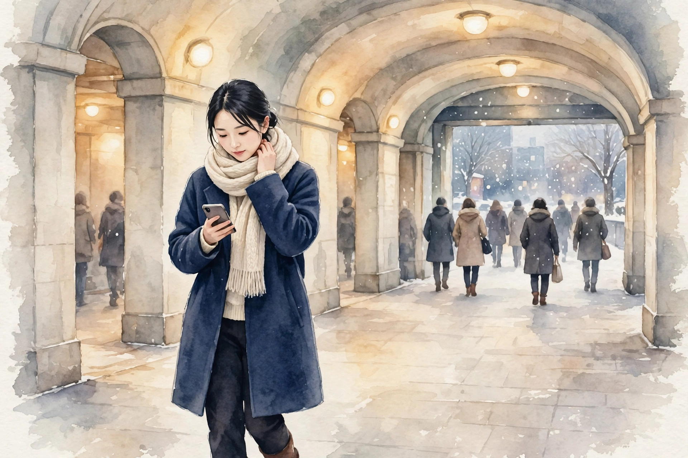

すすきので雪かきのあとに気になる首こり｜冬の作業のあとの過ごし方とセルフケア、受診の目安｜美容整体ステラ・デネブ

札幌の冬は、雪かきが日常になる季節です。朝起きて玄関先の雪をかき、車のまわりの雪をどかす。雪かきのあとに、首の重さを感じることはありませんか。首こりとは、首のまわりの筋肉がこわばり、重さや張りを感じる状態の一般的な呼び方で、雪かきのような普段と違う作業が重なることがあると言われています。このコラムでは、雪かきのあとに首こりが気になるときの要因の整理、過ごし方とセルフケア、受診を考える目安についてお伝えします。
首こりとは、どんな状態か
首こりは、首の後ろや横の筋肉がこわばり、重さや張り、動かしにくさを感じる状態を指す言葉として使われることが多いです。肩こりと一緒に現れることも多く、頭の重さを伴うこともあります。首こりの一般的なとらえ方は、首こりの症状ページでも紹介しています。
首の筋肉は、頭の重さを支え続けています。雪かきのように前かがみの姿勢や、スコップを持ち上げる動きが続くと、首の筋肉に負担がかかり、こわばりやすくなると言われています。首の重さを感じたら、その日の作業の進め方を振り返ってみることが、セルフケアの出発点になります。
雪かきの日に重なりやすい要因
要因のひとつは、前かがみの姿勢の長続きです。雪かきでは、スコップで雪をすくい、横に投げる動きを繰り返します。前かがみの姿勢が長く続くと、首の後ろの筋肉に負担がかかり、こわばりやすくなると言われています。作業の合間に体を起こし、首をゆっくり回すと、こわばりを感じにくくなります。
次に、冬の寒さがあります。札幌の冬の朝は冷え込みが厳しく、体が冷えた状態で作業を始めると、筋肉がこわばりやすくなります。冷えを感じやすい日は、作業の前に体を温め、首元を冷やさない工夫が大切です。手袋やマフラーで首元や手を冷やさないようにしましょう。
雪の重さも見逃せません。湿った雪は重く、スコップ一杯の雪を持ち上げるだけでも首や肩に力が入ります。無理に一度にたくさんの雪を持ち上げると、首や腰に負担がかかります。雪の量が多い日は、腰の重さ・腰痛にも気をつけながら、少しずつ進めることが大切です。
雪かきのあとの過ごし方とセルフケア
まず、作業の進め方を見直してみてください。雪かきは一度に終わらせようとせず、少しずつ進めることです。10分ごとに休みを入れ、首をゆっくり回す、肩を上下に動かす、といった小さな動きを挟むと、首への負担を感じにくくなります。雪の量が多い日は、家族と分担して進めるのも、ひとつの方法です。
作業中の工夫も取り入れてみてください。スコップを持つときは、体に近づけて持ち、首だけに力が入らないように気をつけることです。雪を投げるときは、体全体を使って動かすと、首だけへの負担が減ります。雪を投げる方向を決めておくと、無理なひねりを避けられます。
作業後の過ごし方も、首こりの日のセルフケアのひとつです。雪かきのあとは、ぬるめのお湯にゆっくりつかり、首や肩を温めると、こわばりがほぐれやすくなります。入浴後は、温かい飲み物を飲みながら休み、早めに就寝して睡眠を確保すると、翌日の体の重さを感じにくくなります。肩こりと一緒に現れる日は、肩まわりもゆっくり温めて休みましょう。
雪かきの道具と服装の見直し
雪かきの道具の選び方も、首こりの日の見直しポイントのひとつです。スコップは、軽いものを選ぶと、持ち上げるたびの負担が軽くなります。柄の長さは、自分の身長に合ったものを選び、前かがみの姿勢になりにくい長さにしましょう。雪を押して進めるタイプのスノーダンプは、持ち上げる回数が減るため、首や腰への負担を感じにくくなります。
雪かきの日の服装も、首への負担に関わります。防寒着は、動きやすいものを選び、首元を冷やさないようにマフラーを巻きましょう。手袋は、滑りにくいものを選ぶと、スコップを握る力が少なくてすみます。靴は、滑りにくい底のものを選び、雪道で転ばないように気をつけてください。転んで首を痛めることのないよう、足元に気をつけながら進めましょう。
雪の捨て場所も、雪かきの日の見直しポイントです。雪を投げる距離が長いほど、首や肩への負担が大きくなります。雪を捨てる場所は、できるだけ近くに決めておき、投げる距離を短くしましょう。雪の量が多い日は、一度にたくさんの雪を持ち上げず、少しずつ進めることが大切です。除雪車が通ったあとは、玄関先に雪が寄せられることもあるため、朝の雪かきの時間を多めに見積もっておくと安心です。
雪かきの日の休憩の取り方も、首こりの日の見直しポイントのひとつです。雪かきの合間の休憩では、屋内に入って体を温めましょう。温かい飲み物を飲みながら、首をゆっくり回す、肩を上下に動かす、といった小さな動きを挟むと、こわばりを感じにくくなります。休憩の時間は、10分ほどを目安にし、体が冷えきらないうちに作業に戻りましょう。雪かきが終わったら、早めに夕食を済ませ、ゆっくり休む時間を作ることが大切です。
受診を考える目安
セルフケアを続けても、首こりと一緒に気になる変化がある場合は、早めに医療機関を受診してください。手のしびれや痛み、めまいが続く、首の痛みが強くて首を動かしにくい、頭痛が続く、といった状態がある場合は、自己判断で様子を見るのではなく、整形外科やかかりつけ医に相談することが大切です。
首こりが長く続き、セルフケアを続けても変わらない場合も、医療機関に相談してみてください。首の痛みや重さの出るタイミング、気になる変化をメモしておくと、受診のときに伝えやすくなります。
受診のときに伝えることも、まとめておくと役立ちます。首の痛みや重さが出るタイミング（雪かきのあと・朝起きたとき・寒い日）、痛みの場所、続いている期間、手のしびれの有無、睡眠の様子をメモしておくと、医師に伝えやすくなります。問診では、作業の内容や生活リズムも聞かれることがあります。気になる変化を書き留めておくと、受診のときに役立ちます。
それでも雪かきのあとの首こりや体の冷えが抜けない日は、プロの手に委ねる時間も選択肢の一つです。美容整体ステラ・デネブは、札幌・すすきの／大通エリアで開院準備中の女性専用サロンです。オイルマッサージと美容整体で、冬の寒さが続く時期に気になる首や肩のこわばり、冷えを丁寧にほぐすお手伝いができるよう、準備を進めています。料金は90分10,000円の単一価格（初回割引なし）、営業時間は月〜土17:00〜22:00・日曜休み（予定）です。近日開院予定（受付は開始次第、このサイトとLINE公式でお知らせします）。お問い合わせ用LINE公式アカウントを開設しました。開院まで、このコラムで季節のセルフケアをお届けしていきます。